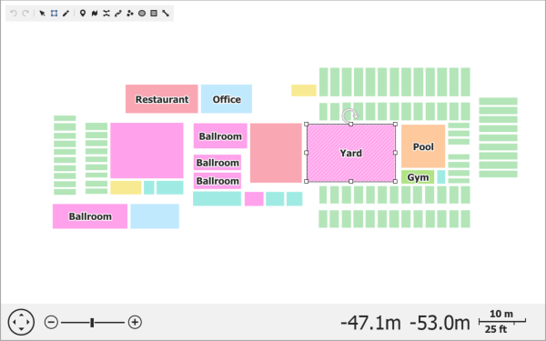
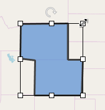
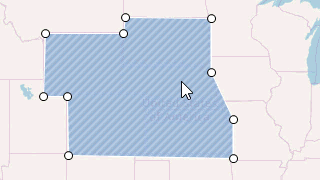
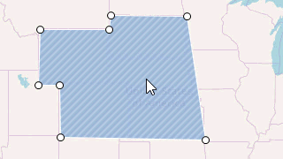
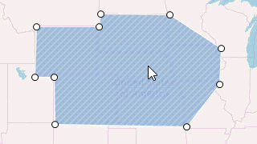
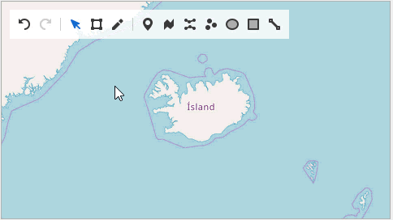

Map Editor
The Map Editor is a built-in tool that allows you to create and modify map items. You can also relocate map items on the map surface, rotate them using a rotation handle, and resize items using the sizing handles. The Map Editor's active mode determines which actions you can perform while editing the map. Use the corresponding editor panel buttons to switch between the Default, Transform, Edit and Create modes.

Map Editor's Panel
The Map Editor's panel includes the following buttons:
- - Cancels the last action.
- - Restores the last canceled action.
- - Enables "Default" mode.
 - Activates "Transform" mode.
- Activates "Transform" mode.- - Turns on "Edit" mode.
- - Enables "Create Pushpin" mode to create pushpins.
- - Enables "Create Path" mode to create map paths.
- - Activates "Create Polyline" mode to create map polylines.
- - Activates "Create Spline" mode to create map splines.
- - Enables "Create Dot" mode to create map dots.
- - Enables "Create Ellipse" mode to create ellipses.
- - Turns on "Create Rectangle" mode to create map rectangles.
- - Enables "Create Line" mode to create map lines.
Map Editor Modes
The Map editor provides the following modes that define the available actions when editing a map:
Default Mode
You can only view the map in Default mode. You can use the button to turn on this mode.
Transform Mode
Select the symbol to enable the Transform mode. This mode allows you to resize and rotate the selected map items using the sizing and rotation handles. You can also move map items by dragging them.

Edit Mode
Use the button to enable the Edit mode. It allows you to move, add, and remove item vertices to change vector map shapes. To edit a map item in this mode, select an item to display its points and perform one of the following actions:
| Action | Animation | Description |
|---|---|---|
| Moving vertices |  | Relocate a shape's point by dragging it. |
| Adding vertices |  | Hover the mouse pointer over the item's edge between two neighboring points and click where you want to insert a new vertex. |
| Removing vertices |  | Remove a shape's point by double-clicking it. |
Note that you can only edit the following map vector items:
- Map line
- Map spline
- Map path
- Map polygon
- Map polyline
Create Mode
Create mode allows you to add new items to the map. Select one of the following symbols to create map items:
You can add dots and pushpins by clicking on the required location. To create a complex map item, add points sequentially to form a map item. Press the Enter key or double-click the item to finish its creation. The following animation shows how to create a map path:

How to Delete a Map Item
Select an item and press the Delete key to delete it.